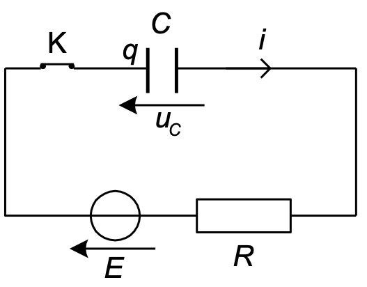
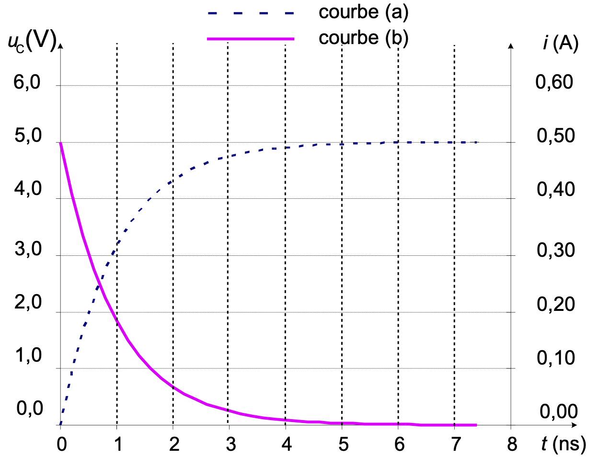
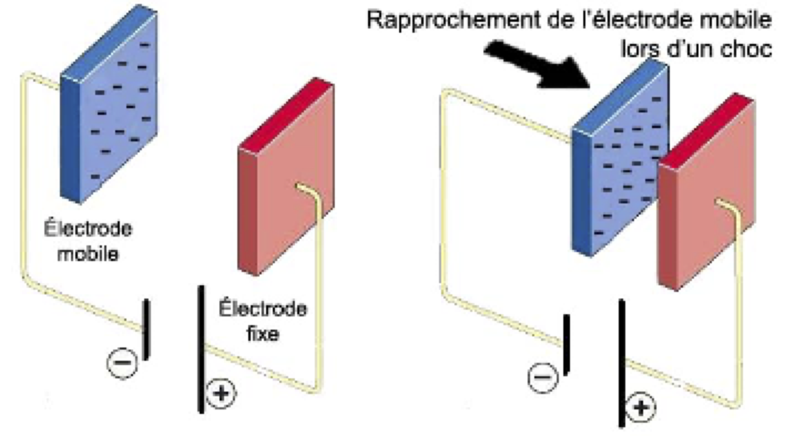

Les technologies développées dans l’industrie microélectronique ont été transposées avec succès pour fabriquer des microsystèmes électromécaniques, c’est-à-dire des systèmes miniaturisés qui intègrent sur une même puce des parties mécaniques (capteurs d’accélération ou de pression, miroirs, micromoteurs) et des circuits électroniques associés. Un des premiers microsystèmes à avoir été développé est l’accéléromètre. Il est entre autres utilisé pour déclencher le gonflage des airbags des véhicules en cas de choc brutal. L’accéléromètre est constitué de deux pièces en forme de peignes complémentaires. L’une est fixe et constitue le cadre, l’autre est mobile à l’intérieur de ce cadre, suspendue par une lamelle flexible, sans contact entre les deux parties. L’ensemble constitue un condensateur. En cas de choc brutal du véhicule, la partie mobile se déplace par inertie dans le sens opposé au mouvement, comme le passager d’un bus qui est debout et se trouve projeté en avant quand le bus freine (voir figure 3). Ce changement de distance entre le peigne mobile et le cadre modifie la capacité du condensateur. Dès que le circuit intégré détecte ce changement de capacité, il commande le gonflage de l’airbag, avant même que le conducteur et les passagers du véhicule ne soient projetés en avant.
défis CEA et Internet.
Nous allons nous intéresser au principe de fonctionnement de ce dispositif. Le peigne mobile et le cadre constituent un condensateur de capacité $C$. Il est branché aux bornes d’une pile de résistance interne $R$ et de force électromotrice $E$. Le circuit est modélisé par le schéma de la figure 1 ci-dessous.
Figure 1 
Données
- $C = \pu{100 pF}$ ($\pu{1 pF} = \pu{1e-12 F}$) ;
- $E = \pu{5,0 V}$.
Comportement de l’accéléromètre en dehors de chocs
La mise sous tension de l’accéléromètre revient à fermer l’interrupteur $K$ du montage modélisant le dispositif représenté sur la figure 1.
Le condensateur est déchargé avant la fermeture de l’interrupteur.
À l’instant t = 0, on ferme l’interrupteur.
Les courbes représentant les variations de la tension aux bornes du condensateur et de l’intensité du courant en fonction du temps sont données sur la figure 2.
Figure 2 
-
Sur cette figure, identifier, en justifiant qualitativement, la courbe correspondant à la tension et celle correspondant à l’intensité.
-
Délimiter de façon approximative et qualifier, sur la figure 2 les deux régimes de fonctionnement du circuit.
-
Déterminer graphiquement la valeur de la constante de temps du dipôle $\tau$. Comparer cette valeur à la durée d’un choc de l’ordre de $\pu{200 ms}$.
-
Donner l’expression littérale de cette constante de temps. En déduire un ordre de grandeur de la valeur de la résistance $R$.
-
Déterminer graphiquement sur la figure 2 les valeurs de la tension aux bornes du condensateur et de l’intensité du courant en régime permanent.
-
En déduire, en régime permanent, la valeur de la charge $q$ du condensateur définie sur la figure 1.
Déclenchement de l’airbag
- D’après le texte introductif, comment se nomment les parties de l’accéléromètre correspondant aux armatures mobile et fixe ?
Le rapprochement des deux armatures provoqué par un choc entraîne une augmentation de la capacité du condensateur (figure 3). Il s’agit de comprendre les conséquences de cette variation. En tenant compte du fait que la constante de temps est très faible, on considérera que la valeur de la résistance est nulle.
Figure 3 : à gauche situation avant le choc, à droite, situation après le choc 
-
Parmi les deux propositions suivantes donnant l’expression de la capacité $C$ en fonction de la distance $d$ entre les armatures du condensateur, choisir en justifiant celle qui peut convenir :
- $C = k\, d$
- $C = \dfrac{k}{d}$
-
Donner l’expression de la tension aux bornes du condensateur $u_C$ et de la charge $q$ du condensateur avant le choc, en fonction de $E$ (on pourra s’aider d’un schéma du circuit).
-
Justifier que la tension aux bornes du condensateur n’est pas modifiée par le choc. En déduire que le choc a pour effet de faire augmenter la charge q du condensateur.
-
Sur le schéma de la figure 3, indiquer le sens de déplacement des électrons dans le circuit engendré par la variation de charge $q$ du condensateur.
-
Donner la relation entre l’intensité i du courant et la charge q du condensateur.
-
Choisir parmi ces affirmations celle qui convient : Le déclenchement du gonflage de l’airbag est commandé par la détection d’une variation :
- de tension aux bornes du condensateur ;
- d’intensité du courant dans le circuit ;
- de tension aux bornes du générateur.